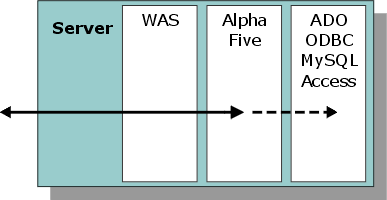
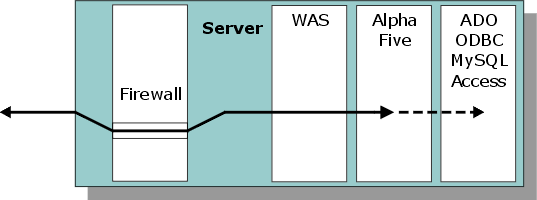
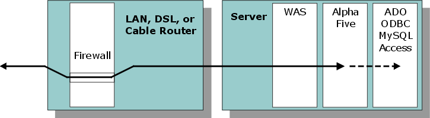

Putting Your Website On-Line
When it comes to putting an Alpha Five website on-line, some people would rather let a third-party ISP handle the details. For these people, several solutions are available. ((|#Hosting_by_A5_OnLine|See below)).
If you want to configure and maintain your own website, you will want to consider three issues:
Connectivity - will you have a dedicated connection or will you web site be available intermittently?
Location - will you use a static IP address provided by your ISP or will you use a dynamic IP address provided by a third party?
Safety - will you need a firewall or will your users all be part of a trusted community?
There are three typical configurations that Alpha Five customers will use when hosting a web site.
ISP Hosting
LAN or WAN without a firewall
Internet with a firewall
LAN or WAN without a Firewall
These configurations are typically going to be found within a closed network, such as maintained by a corporation, university, or government agency.

Although the picture above shows the Application Server (WAS), Alpha Five, and optional third party database products running on a single server, they could easily be running on separate computers.
Internet with a Firewall
These configurations are going to be found where the network is open to the public. The firewall is going to be located either on the server or on a router of some type. Firewalls are typically dedicated pieces of hardware. On smaller networks, they are sometimes part of the router.


Static IP Addresses
Typically, when you access a web page on a server, you specify a URL and a page name. When you access the root directory of a web site, and do not specify a page name, the server defines the name of a default page. On the Application Server, the default page name is index.a5w, followed by index.html if index.a5w is not found. (Users may change this configuration.)
Behind the scenes, the URL is mapped to an IP address, which is the server's address on the Internet. An IP address is composed of four numbers, each ranging between 0 and 255. Unless otherwise specified, the port is assumed to be number 80. The full address of the Application Server could look like this: http://192.0.0.5:80. The full address of a page could look like this: http:192.0.0.5/mypage.htm.
|
Item |
Description |
Comment |
|
Domain name |
An easy to remember alias for your static or dynamic IP address. |
|
|
IP Address |
The location of your server computer on the Internet. |
You want to avoid forcing users to discover what dynamic IP address you are using today. The strategy is to get a static IP address. If your ISP cannot or will not support a static IP address, then use a third-party service which will give you a static IP address and map it your changing dynamic IP address. |
|
Port |
The "location" of the Application Server on your server computer. |
Browsers assume you want to talk to port 80, unless you specify a different port. You want to avoid forcing your users to type in a different port number. |
|
Page Name |
The page to retrieve. |
Servers identify a default page unless you specify a different page. |
Many home ISPs block traffic to port 80. This is to prevent home users from running servers and going into competition with them. If your ISP blocks port 80, you may run your server on a different port or contact your ISP about unblocking this port, for which they typically charge an additional fee.
Firewalls
A firewall introduces some complexity into server configurations, since firewalls are designed to prevent access by external users. The solution is to open a "hole" in the firewall. For example, you would reconfigure your firewall to allow inputs through port number 80 (or some other number). The actual number of the port used should match the port number specified in your Application Server configuration. Depending on the type of firewall, you will be able to map this port to an internal IP address or a different port number (known as port forwarding ). This will allow incoming traffic to pass through the firewall and reach your server.
You will have to consult your router or firewall documentation for configuration instructions.
Dynamic IP Addresses
The discussion thus far describes how to handle static IP addresses. In other words, your computer or router is always addressable at one IP address. Sometimes ISPs will provide you with a dynamic IP address. This means that each time you connect to the network, you may have a different address. This obviously makes the task of remote users more difficult, when the location of your server is constantly changing.
Another solution is to contact a DDNS (Dynamic Domain Name Server) service provider. This type of company will provide you with a static IP address that is automatically mapped to the dynamic IP address provided by your ISP. To find a DDNS provider, search on the Internet. I found the following companies on the first page of my Google search results when I looked for "DDNS provider". Find some likely DDNS service providers and ask them about their services and prices.
 Note : Alpha Software
does not recommend or guarantee the services of any of these companies.
Note : Alpha Software
does not recommend or guarantee the services of any of these companies.
|
Company |
URL |
|
Nettica.com |
|
|
Microtech Limited |
|
|
netzadmin |
|
|
ozcableguy.com |
|
|
no-ip.com |
|
|
zonedit |
|
|
worldwidednsnet.net |
|
|
DynDNS.org |
Configuring the Application Server's Port Number
Install and configure Alpha Five Version 6 or 7.
Within Alpha Five, display the Control Panel.
Select Tools > Application Server.
Display the General tab (see also Configuring and Running the Server).
Set the Server Port to the port number you are letting through your firewall.
Configuring Your Computer's IP Address
Most computers in networks actually have dynamic IP addresses that are provided by a DHCP server. However, these addresses change so rarely that they are effectively static. In a commercial operation you may want to eliminate any risk and assign your server computer a static IP address.
Please follow the instructions below for Windows XP and Windows 2000.
In Windows click Start > Run.
When the Run window appears, input control "ncpa.cpl" into the Open field.
After the Network and Dial up Connections or Network Connections dialog opens, right click on the Local Area Connection or Wireless Network Connection which controls the connection to the router.
After the Local Area Connection Properties or the Windows Network Connection Properties dialog appears, select "Internet Protocol (TCP/IP)" and click the Properties button.
Once the Internet Protocol (TCP/IP) Properties dialog opens, change the option from "Obtain an IP address automatically" to "Use the following IP address".
Set the options under "Use the following IP address" and "Use the following DNS server addresses".
Set the following values.
IP : 192.168.1.20 (If there are multiple computers being setup with static IP's, then the next computer would be .25, and next would be .30, etc)
Subnet Mask : 255.255.255.0
Default Gateway : 192.168.1.1
Preferred DNS server : 192.168.1.1
Click OK then OK or Close.
Make sure that your DHCP server does not assign your new static IP address to any other computer in your network.
See Also
Configuring and Running the Server
Supported By
Alpha Five Version 6 and Above
Limitations
Web publishing applications only.